& Web Designer • Illustrator

The Good Dog Collective
Services
Brand Identity, UX/UI Design,
Editorial Design, Illustration
Role
Researcher, UX/UI Designer,
Brand Designer, Illustrator
Overview
The Good Dog Collective is a support system designed to help people make more prepared adoption decisions and feel supported through the early, high-risk weeks of bringing a dog home. The project responds to a common gap in the adoption process: adopters often receive just enough information to feel confident, but not enough preparation to handle uncertainty. This lack of preparation can lead to stress and guilt, and in some cases, it contributes to avoidable returns or unsafe situations.
Challenge
Dog adoption is often framed through “perfect dog” language and optimism, even though real-life adjustment is frequently messy. The core design challenge was to reduce emotional overconfidence without creating fear, translate expert knowledge into approachable guidance, support adopters across time rather than only at the decision moment, and respect rescues and shelters while still acknowledging system constraints.
Research and Analysis
I used a mixed-method research approach to understand context, identify patterns, and reduce risk before committing to a single direction. The research combined ethnographic research, including my personal lived experience with a rescue dog, surveys, and interviews with primary users and subject matter experts, as well as secondary sources and market scanning so that insights could be cross-checked from multiple angles.
Competitive Analysis
I conducted a competitive analysis to map the landscape of direct and indirect competitors, and to understand the conventions users already expect. I compared feature sets, onboarding flows, information architecture, and tone of voice across leading examples, and I documented where each competitor was strong and where they created friction. This analysis revealed repeated gaps in transparency, accessibility, and long-term engagement, which became key opportunities for my solution to differentiate.


User Interviews
I ran user interviews to learn how people currently approach the problem, what motivates their choices, and what stops them from following through. I focused on stories and real recent behavior rather than hypotheticals, and I used follow-up questions to uncover underlying needs such as reassurance, simplicity, and control. The interviews helped me identify the highest-friction moments in existing workflows and clarified which benefits mattered most to different user types.
Stakeholder Analysis
I performed a stakeholder analysis to clarify who influences the system around the user and what constraints shape the final experience. I mapped primary stakeholders, secondary stakeholders, and organizations adjacent to the problem space, then identified their motivations, incentives, and potential conflicts. This work informed messaging, content strategy, and the boundaries of what the solution could reasonably promise.

User Personas and Journey Mapping
Based on the research, I developed user personas to represent distinct goals, behaviors, and barriers. Each persona captured the context of use, the emotional drivers behind decisions, and the constraints that affect engagement over time. I then created journey maps to visualize the end-to-end experience, including the moments where users feel uncertainty, where they need guidance, and where they are most likely to abandon the process. The journey mapping highlighted the highest-leverage improvements, especially around first-time understanding, decision support, and a clear sense of progress.
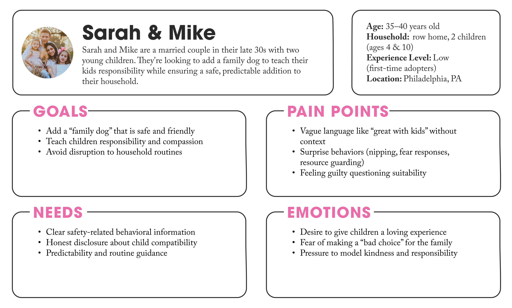
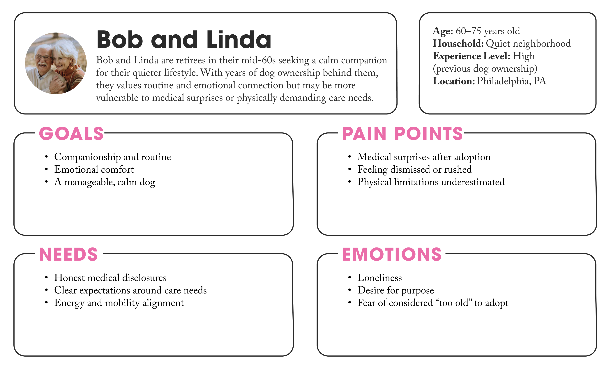
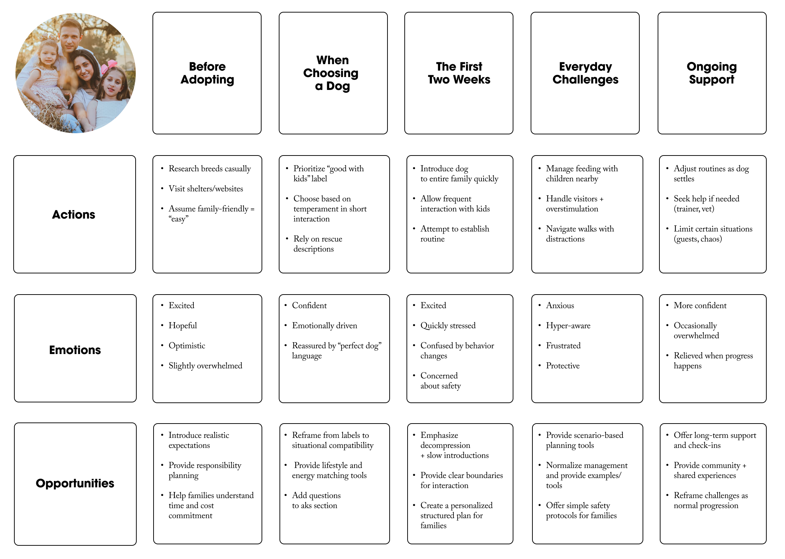
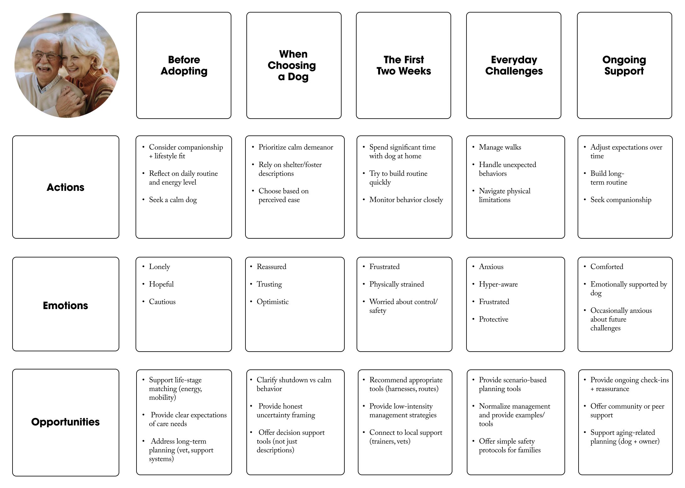
Ideation and Concept Development
During ideation, the concept expanded into a broader support system. Initially, the goal was to improve transparency and decision-making before adoption. It later shifted toward supporting preparedness over time through a guided journey that helps adopters before, during, and after adoption. This work was grounded in a simple thesis: the problem is not bad dogs or bad adopters, but unsupported uncertainty.
MoSCoW Prioritization
Based on research and user interviews, I used MoSCoW prioritization to classify touch-points and features that directly addressed the most common breakdowns in the adoption journey.
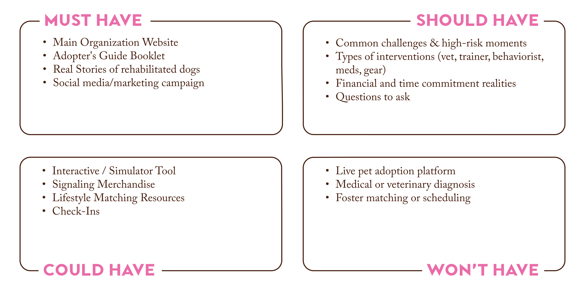
Low-Fidelity Prototyping
I created a low-fidelity prototype to test information architecture and interaction flow before investing in visual polish. This prototype focused on structure, hierarchy, and decision points, with simplified components and placeholder content where needed. Using a low-fi approach allowed faster iteration and made it easier for users to comment on usability rather than aesthetics.
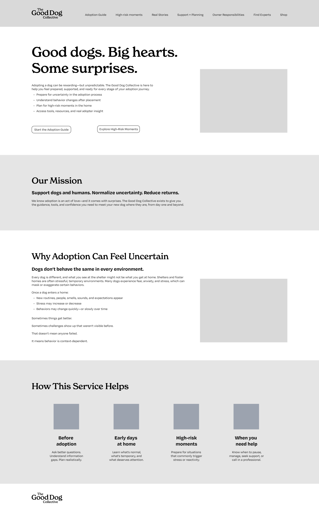
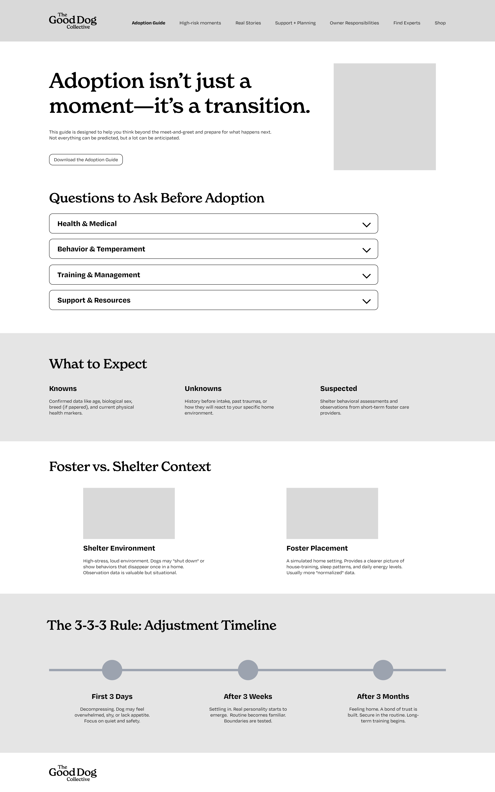
Visual Identity
After validating the concept and core flow, I developed a visual identity system that supports legibility, trust, and consistency across deliverables. I defined brand principles that reflect the project’s tone, and I created a set of reusable rules so that the system scales cleanly across print, web, and social.
Logo System
I designed a flexible logo system with a primary mark and supporting lockups for different contexts.
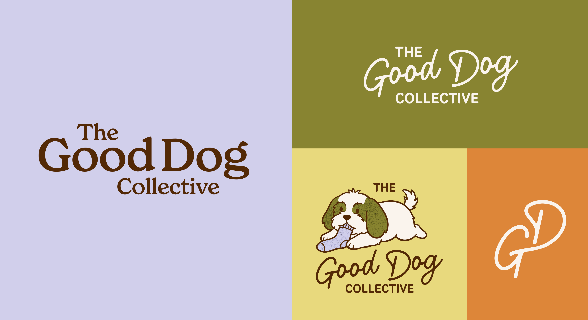
Color Palette
I build a warm, grounded color system built around concepts like reality, possibility, and support.
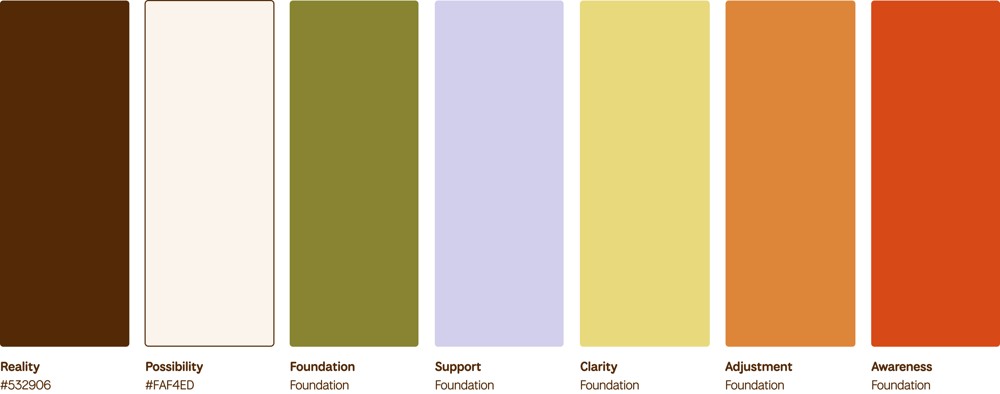
Typography
I selected typefaces and created a typographic scale that balances personality with functional readability.
Illustration System
Custom illustrations play a critical role in storytelling, intentionally depicting both the “good dog” moments and the more difficult, often hidden realities of life with a dog. This duality helps normalize the idea that both can exist at the same time.
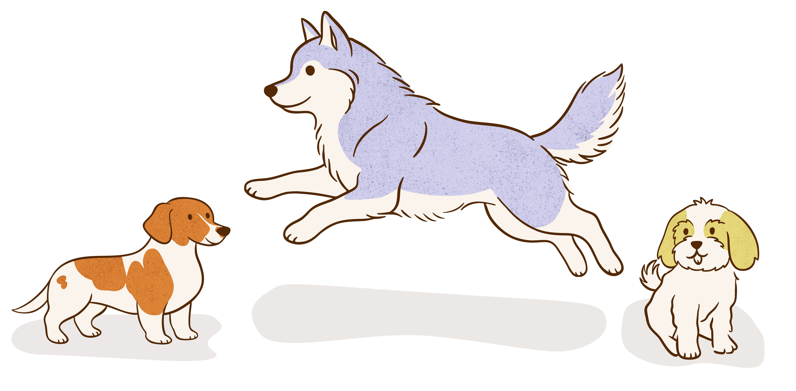
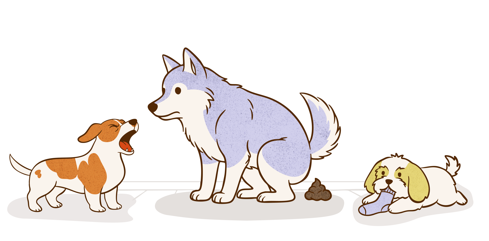
Iterative Prototyping and User Testing
As the project evolved, one of the most important shifts came through iterative prototyping and user testing. Early versions of the website prioritized depth of information, but lacked clear structure. Users understood the value of the content, yet consistently expressed uncertainty about where to begin, what to prioritize, and how to move through the experience. In response, I reframed the entire experience into a structured, five-step journey framework. This approach transformed the platform from a collection of resources into a guided system that mirrors the real adoption timeline.
Final Prototype
The final prototype demonstrates how the concept lives as a cohesive system across multiple touchpoints. Each deliverable was designed to reinforce the same story, visual language, and user journey while adapting to the constraints of the format.
Adoption Guide Booklet
Designed to be encountered at shelters, rescues, or adoption events, the booklet focuses on the first two steps of the journey, helping users understand the true responsibilities of dog ownership through tools like a daily schedule planner, cost breakdowns, and a readiness checklist. It also introduces decision-making tools such as lifestyle matching and guided questions to ask before adopting. The booklet acts as both an educational tool and an entry point into the larger system.


Website
The website prototype translates the adoption journey into an interactive, step-by-step flow with clear navigation and an accessible content structure, helping users quickly understand what to do next and make more prepared decisions. It prioritizes guided decision-making through focused tools and prompts at key moments, while maintaining quick comprehension and a consistent visual identity that feels supportive and trustworthy throughout the experience.

Physical Merchandise
The physical merch extends the identity into tangible objects that build recognition and reinforce the project’s tone. The designs use the logo system, palette, and illustration language in a way that remains readable and cohesive on real materials.


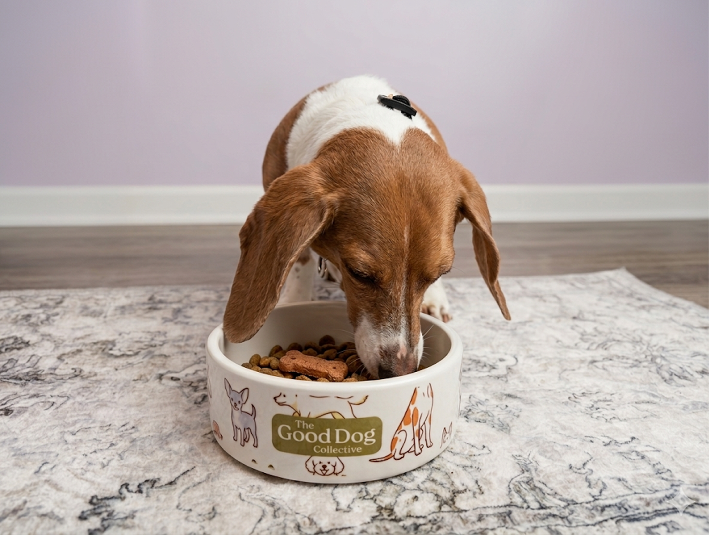
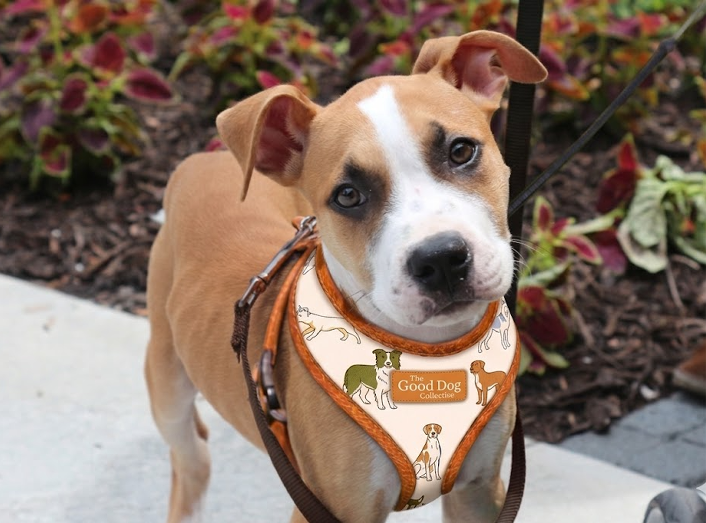
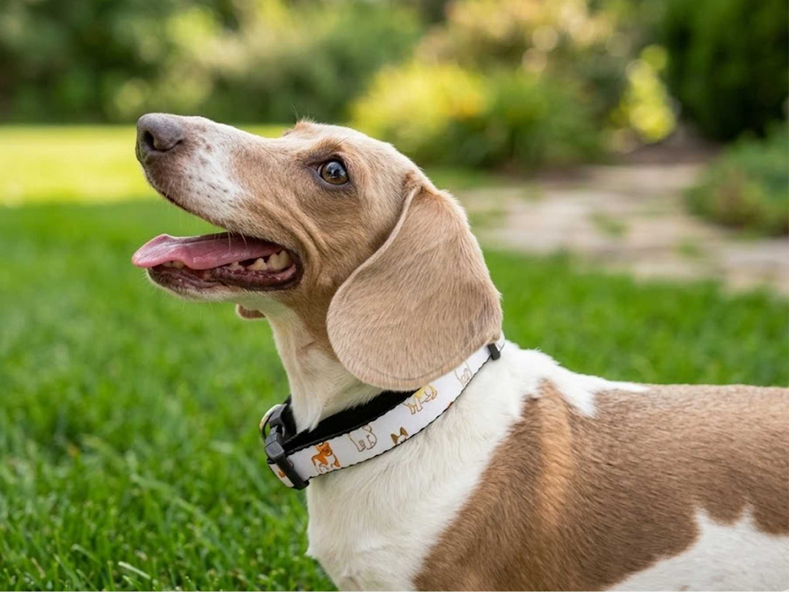
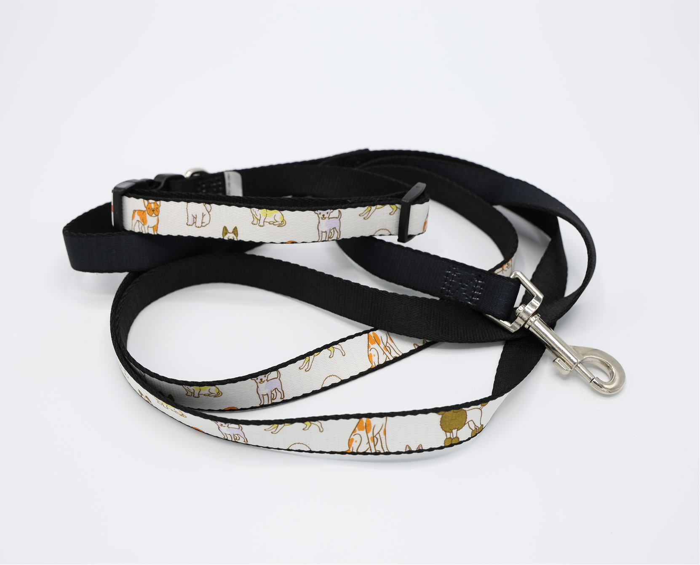

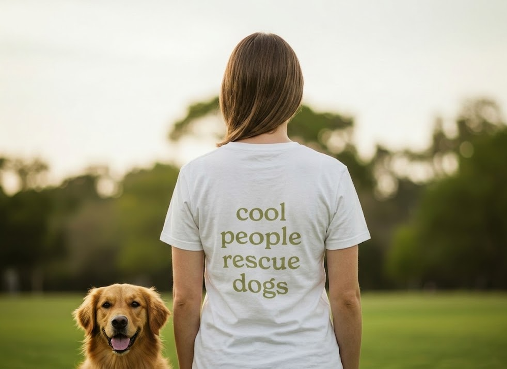
Social Campaign
The social campaign was designed to build awareness and engagement around The Good Dog Collective. The social media system communicates the project in a modular, repeatable way through templates and content patterns. The system is designed to support both informational content and storytelling .

Reflection and Impact
This Capstone process reinforced the value of research-led decision making and iterative testing as a way to reduce risk and increase clarity. By shifting the focus from idealized outcomes to realistic, supported experiences, the project aims to improve both human and animal well-being, reduce adoption returns, and build more sustainable, informed relationships between adopters and their dogs. Looking forward, this project has the potential to scale through partnerships with rescue organizations, shelters, and advocacy groups . Future development could include deeper integration with adoption platforms, expanded expert networks, and continued refinement through real-world testing and feedback.